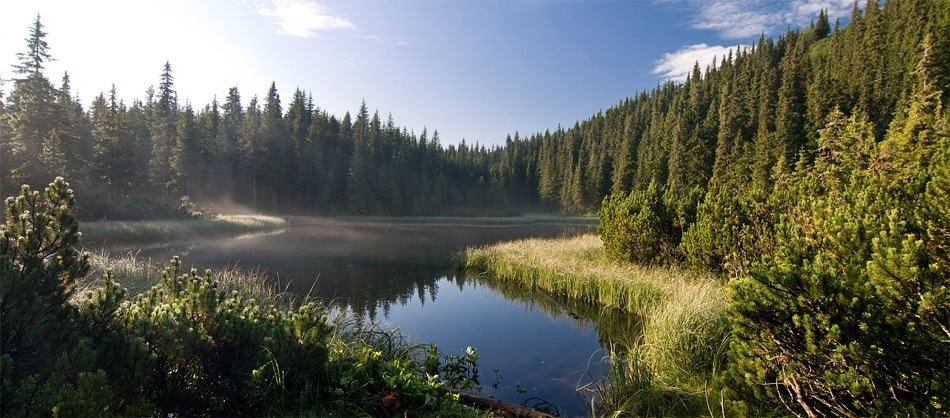
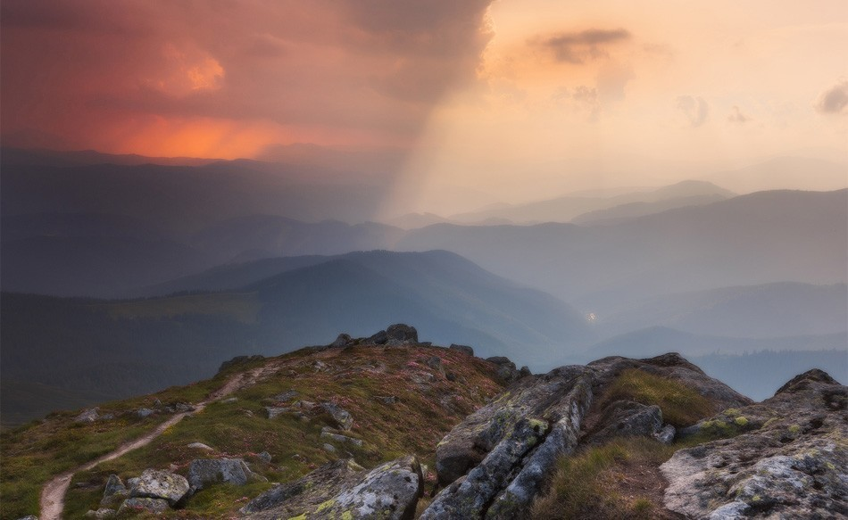
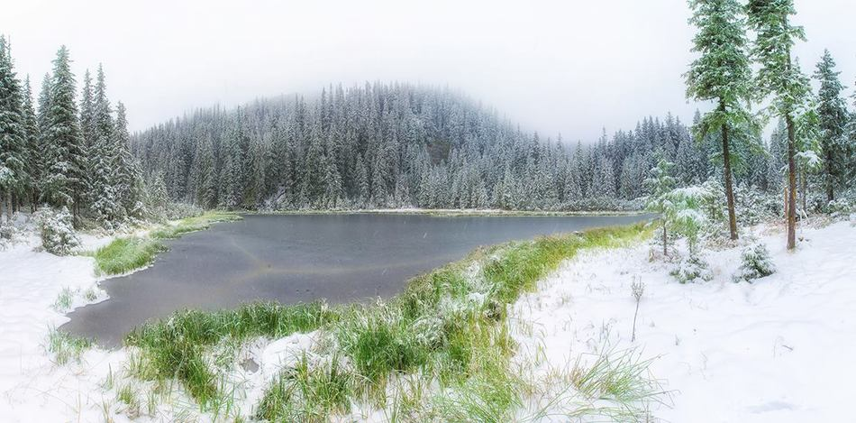

Озеро Марічейка (1 510 м), Чорногірський хребет
Дистанція та складність: 18 км, середній
Час проходження: 6 годин, одноденний
Локація: Чорногірський хребет
Марічейка — прекрасне гірське озеро, звідусіль оточене густим смерековим лісом. Кажуть, утворилось зі сліз чабана Івана, кохану котрого замордували вороги — дівчина Марічка йшла до нього в гори, аж тут бачить: до села з-за хребта підступають недруги. Вмовила коханого поспішати до рідних, аби попередити про небезпеку,
а сама вирішила заплутати вороже військо у карпатських стежках. Селяни встигли врятуватись, проте Марічка заплатила за те своїм життям.
Легенда має й інакше закінчення. Гори затрясло від того вбивства: здригнулась земля,
небо запалало блискавками, камені летіли на голови загарбників і під каменепадною вагою утворилось провалля,
жахлива злива не вщухала кілька днів,
і кого не розчавило каміння, той потонув у новоутвореній водоймі.
Відтоді озеро стали звати Марічейка, а ліс довкола — Дівочим.
Наука ж каже, що озеро має льодовикове походження, тому знаходиться так високо та має прісну воду.
Глибина Марічейки не перевищує 0.8 метра, хоча малим озеро не назвеш:
Марічейка 88 метрів завдовжки і 45 метрів завширшки. Розташоване на висоті 1 510 м н.р.м..
Стежок до Марічейки веде безліч, але найбільш зручний маршрут — від села Шибене
(якщо не зважати на складність доїзду до самого Шибеного).

Дорога маркована, добре втоптана. Від КПП Шибене до Марічейки — 9 км в один бік.
За сприятливих погодних умов та відповідної фізичної підготовки, піднятись можна за 3 години.
Підйом зі значним набором висоти, подекуди стрімкий: від приблизно 850 метрів біля КПП вам доведеться піднятись до 1 510 метрів
біля Марічейки. Проте, ця ділянка чи не єдина, на якій треба попотіти, якщо ваша мета — Чорногірський хребет.
За 4.5 км від озера лежить вершина Піп Іван Чорногірський
(2 028 м), від якого похід Чорногорою аж до самісінької Говерли (2 064 м) може здатися легкою прогулянкою.

Таким чином, якщо зранку, годинці о восьмій, вийти на маршрут, за один день без особливого перенапруження для юних туристських організмів, можна:
зайти на полонину Хом’яків, взяти вершину, зробити кілька пам’ятних знімків і широко розкинувши руки покричати “Еге-гей!” згори,
спуститись на полонину для перепочину та умовного обіду, рушити на Гук, покричати “Ого-го!”, його побачивши, неквапом дійти від
водоспаду до траси і сісти на вечірній автобус до міста. Як вам такий план дій?
На Марічейку можна: йти пішки, йти/їхати велосипедом (аби далі продовжити маршрут Чорногорою),
їхати квадроциклом, УАЗом.
На замітку:
Цей маршрут придатний для велосипедистів, підйом на вершину буде не з простих, проте спуск лінією підйому принесе незабутні враження.
Велосипед повинен бути справним, MTB, обов’язково мати шолом. Цей маршрут для тренованих туристів-велосипедистів.

Біля Марічейки є достатньо місця для таборування великої групи (30 осіб розмістяться без проблем).
Для сходження на гору Піп Іван чи підйому до озера Марічейка з Шибеного обов’язково мати при собі документ, що посвідчує особу
(оптимальний варіант — паспорт). Без нього вас не пропустять далі КПП.
Як дістатись:
З
Верховини можна їхати автобусом: відправлення щодня о 12:00 та 17:50*,
вартість проїзду 16 грн.. Час у дорозі: в середньому, 1.5 години.
З Шибеного на Верховину автобуси також ходять двічі на день: відправленням о 7:00 та о 14:00*.
Вартість проїзду та сама — 16 грн. з людини.
Автостанція у Верховині:вул. Грушевського, 1, тел. (03432) 2-12-90
Графік роботи: з 5.00 до 19.00
Однак частіше туристи користуються послугами таксі: винаймають легкові машини та міні-вени у напрямку Шибеного.
Дорога на Шибене не з легких, тому готуйтесь, що не кожен водій погодиться вас довезти.